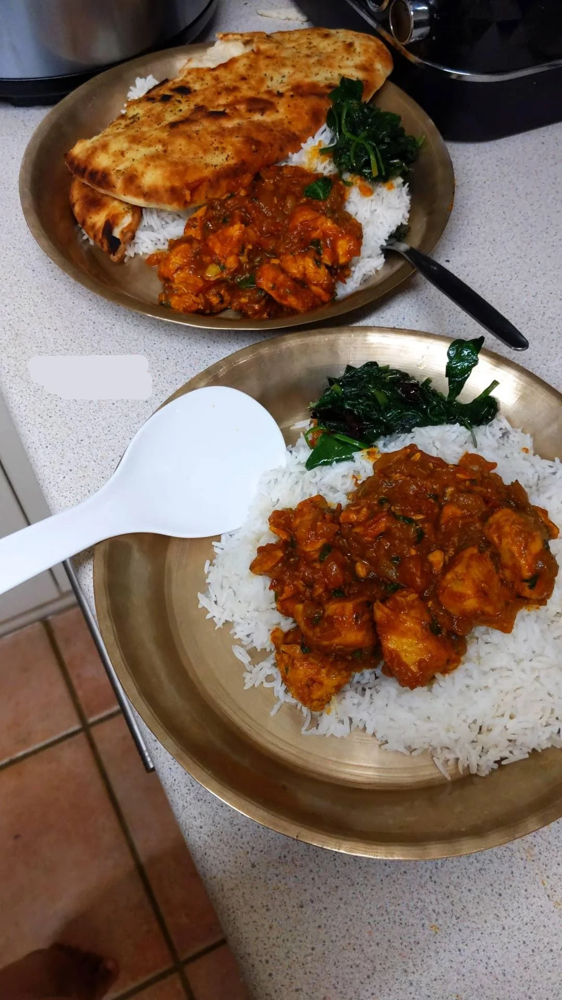

Masu

Description
Nepali chicken curry, or *kukhura ko masu*, is a flavorful and aromatic dish that's central to Nepali cuisine. Unlike Indian curries,
which can be creamier or have a heavier use of spices, Nepali chicken curry is known for its lighter, earthy taste, combining fresh ginger,
garlic, turmeric, cumin, and coriander, with a modest use of tomatoes and green chilies. The chicken is often marinated in spices before cooking,
allowing it to absorb a deep flavor, then slow-cooked until tender, resulting in a thick, aromatic sauce that clings beautifully to each piece of chicken.
The dish is traditionally served with steamed rice (*bhat*), pickles (*achar*), and often lentil soup (*dal*), making it a comforting part of the
Nepali meal experience. Nepali chicken curry is both spicy and subtly complex, with the use of *timur* (Sichuan pepper) adding a unique, tingling
warmth that sets it apart. Each household might add its own touch, sometimes with a dash of mustard oil or fenugreek seeds, lending a distinctive
twist to this cherished, homestyle dish.
Ingredients
- 1 kg chicken, cut into pieces
- 2 tbsp mustard oil (or any cooking oil)
- 1 large onion, finely chopped
- 1 medium tomato, chopped
- 2-3 cloves garlic, minced
- 1-inch piece of ginger, minced
- 2 green chilies, chopped (adjust to taste)
- 1 tsp turmeric powder
- 1 tsp cumin powder
- 1 tsp coriander powder
- 1/2 tsp garam masala
- 1/2 tsp Sichuan pepper (timur), optional
- Salt, to taste
- Fresh cilantro, chopped, for garnish
Steps
```html
- Heat the mustard oil in a large pot over medium heat. Allow it to get hot until it reaches a smoking point, then reduce the heat slightly.
- Add the chopped onions and sauté until they turn golden brown.
- Add the minced garlic, ginger, and green chilies. Sauté for 1-2 minutes until the raw smell fades.
- Add the chopped tomatoes and cook until they soften and blend into the mixture.
- Stir in the turmeric, cumin, coriander powder, and salt. Cook the spices for a minute to bring out their aroma.
- Add the chicken pieces, stirring well to coat them in the spice mixture. Cook for 5-7 minutes until the chicken starts to brown slightly.
- Pour in about 1 cup of water to create a curry sauce. Cover the pot and let the chicken simmer on low heat for 20-25 minutes, or until the chicken is tender and cooked through.
- Sprinkle garam masala and Sichuan pepper (if using) into the curry and stir well. Let it simmer for an additional 2-3 minutes.
- Turn off the heat and garnish with fresh cilantro before serving.